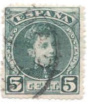
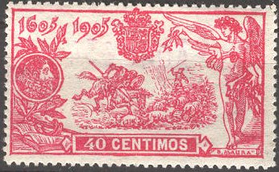

Return To Catalogue - Spain overview - Spain 1930 onwards
Note: on my website many of the
pictures can not be seen! They are of course present in the
catalogue;
contact me if you want to purchase it.



2 c brown 5 c green 10 c red 15 c blue 15 c violet 20 c black 25 c blue 30 c green 40 c yellow 40 c red 50 c blue 1 P red 4 P violet 10 P orange
These stamps have perforation 14. These stamps ususally have control numbers on the back.
Value of the stamps |
|||
vc = very common c = common * = not so common ** = uncommon |
*** = very uncommon R = rare RR = very rare RRR = extremely rare |
||
| Value | Unused | Used | Remarks |
| 2 c | * | c | |
| 5 c | * | c | |
| 10 c | * | c | |
| 15 c blue | ** | vc | |
| 15 c violet | ** | vc | |
| 20 c | *** | * | |
| 25 c | ** | vc | |
| 30 c | ** | c | |
| 40 c yellow | *** | ** | |
| 40 c red | *** | * | |
| 50 c | *** | c | |
| 1 P | *** | c | |
| 4 P | R | *** | |
| 10 P | RR | R | |


5 c green 10 c red 15 c violet 25 c blue 30 c grey 40 c red 50 c grey 1 P red 4 P lilac 10 P yellow
Value of the stamps |
|||
vc = very common c = common * = not so common ** = uncommon |
*** = very uncommon R = rare RR = very rare RRR = extremely rare |
||
| Value | Unused | Used | Remarks |
| 5 c | * | * | |
| 10 c | * | * | |
| 15 c | * | * | |
| 25 c | * | ** | |
| 30 c | R | R | |
| 40 c | R | R | |
| 50 c | * | ** | |
| 1 P | RR | RR | |
| 4 P | *** | R | |
| 10 P | R | RR | |
I've seen the 15 c value with overprints
1) '14 ABRIL 1938 VII - Aniversario de la Republica 45 cts'
2) 'FIESTA DEL TRABAJO 1 MAYO 1938 45' (with '1 MAYO 1938' in a
black ellipse)
3) 'Fiesta del Trabajo 1 MAYO 1938 1 Peseta'
I know that forgeries exist of these stamps. In the 10 P value, 'B.MAURA' in the right hand bottom side should be clearly visible in the genuine stamps. I have no further information concerning these forgeries.


I've been told that this is a forgery of the 10 P value (front
and backside)
The Serrane guide mentions a Genoa forgery (N.Imperato) of the 10 Pesetas value, with the 'U' of 'MAURA' almost closed on top and forged control number 'A.008.866'. In Le Postillon Revenue Philatelique of June 1920, page 405 it is stated that this forgery of Spain 1905 Cervantes (Don Quichote) 10 Pesetas, has a "MADRID 15 MAY 1905" cancel, price 1.25 Francs.

Image obtained from http://www.graus.com
20 c orange
Value of the stamps |
|||
vc = very common c = common * = not so common ** = uncommon |
*** = very uncommon R = rare RR = very rare RRR = extremely rare |
||
| Value | Unused | Used | Remarks |
| 20 c | ** | * | Two different shades of orange exist. |

10 c red 15 c violet 25 c blue 50 c green 1 P lilac 4 P brown
These stamps have perforation 11 1/2.
Value of the stamps |
|||
vc = very common c = common * = not so common ** = uncommon |
*** = very uncommon R = rare RR = very rare RRR = extremely rare |
||
| Value | Unused | Used | Remarks |
| All values | c | * | |
I've been told that reprints exist with perforation 11 instead of 11 1/2.
2 c grey 2 c brown (1920) 5 c green 10 c red 15 c violet 15 c yellow 20 c green 20 c violet (1920) 25 c blue 30 c green 40 c red 50 c blue 1 P red 4 P lilac 10 P orange
Value of the stamps |
|||
vc = very common c = common * = not so common ** = uncommon |
*** = very uncommon R = rare RR = very rare RRR = extremely rare |
||
| Value | Unused | Used | Remarks |
| 2 c grey | * | c | |
| 2 c brown | * | c | |
| 5 c | * | vc | |
| 10 c | * | vc | |
| 15 c violet | ** | vc | |
| 15 c yellow | * | vc | |
| 20 c green | *** | c | |
| 20 c violet | *** | vc | Two different printing processes exist |
| 25 c | * | vc | |
| 30 c | ** | c | |
| 40 c | *** | c | |
| 50 c | ** | vc | |
| 1 P | *** | c | |
| 4 P | R | * | |
| 10 P | RR | *** | |
Overprinted 'CORREO AEREO' (1920) 5 c green (overprint red) 10 c red 25 c blue (overprint red) 30 c green 50 c blue (overprint red) 1 P red
Value of the stamps |
|||
vc = very common c = common * = not so common ** = uncommon |
*** = very uncommon R = rare RR = very rare RRR = extremely rare |
||
| Value | Unused | Used | Remarks |
| 5 c | * | * | |
| 10 c | * | * | |
| 25 c | * | ** | |
| 30 c | RRR | ? | |
| 50 c | ** | ** | |
| 1 P | *** | *** | |
Some of these stamps have control numbers on the back. Imperforate stamps also exist.

1 c green
Value of the stamps |
|||
vc = very common c = common * = not so common ** = uncommon |
*** = very uncommon R = rare RR = very rare RRR = extremely rare |
||
| Value | Unused | Used | Remarks |
| 1 c | c | c | |
Overprinted 'Sociedad de las Naciones LV reunion del Conseio Madrid' (1929)

1 c green
Several 'REPUBLICA' overprints were applied on this stamp in 1931, 'REPUBLICA' slanting in black for Madrid, 'REPUBLICA' straight in red color (two sizes) for Madrid, 'REPUBLICA' straight in black for Barcelona and 'REPUBLICA' slanting in black for Barcelona (larger than the Madrid overprint).

1 c green and black 2 c brown and black 5 c green and black 10 c red and black 15 c yellow and black 20 c violet and black 25 c blue and black 30 c green and black 40 c red and black 50 c blue and black 1 P red and black 4 P violet and black 10 P yellow and black
Value of the stamps |
|||
vc = very common c = common * = not so common ** = uncommon |
*** = very uncommon R = rare RR = very rare RRR = extremely rare |
||
| Value | Unused | Used | Remarks |
| 1 c | * | * | |
| 2 c | * | * | |
| 5 c | * | * | |
| 10 c | * | * | |
| 15 c | ** | ** | |
| 20 c | ** | ** | |
| 25 c | ** | *** | |
| 30 c | *** | *** | |
| 40 c | *** | *** | |
| 50 c | *** | *** | |
| 1 P | R | R | |
| 4 P | RR | RR | |
| 10 P | RR | RR | |
I've been told that the next stamp is a forgery, if anybody has more information about the forgeries of these stamps, please contact me!
(Forgery of the 10 P stamp)

40 c and non-issued 25 c blue.
2 c green 5 c lilac 5 c red (1926) 10 c red 10 c green 15 c blue 20 c lilac 25 c red 25 c blue 30 c brown (1926) 40 c blue 50 c orange
All stamps have control numbers at the back (except the 2 c). A 25 c blue was prepared but not issued.
Overprinted 'Sociedad de las Naciones LV reunion del Conseio Madrid' (1929)

2 c green (red overprint) 5 c red (blue overprint) 10 c green (red overprint) 15 c blue (red overprint) 20 c lilac (red overprint) 25 c red (blue overprint) 30 c brown (red overprint) 40 c blue (red overprint) 50 c orange (blue overprint)
1 P black 4 P red 10 P brown Overprinted 'Sociedad de las Naciones LV reunion del Conseio Madrid' (1929)
Reduced sizes
1 P black (red overprint) 4 P red (blue overprint) 10 P brown (blue overprint) Overprinted 'Republica Espanola' vertically (1931)
1 P black (red overprint) 4 P red (RRR, blue overprint) 10 P brown (RRR, blue overprint)
1 c black 2 c blue 5 c brown 10 c green 15 c blue 20 c violet 25 c red 30 c green 40 c blue 50 c orange 1 P black 4 P red 10 P brown Express stamp 20 c lilac and brown
These stamps were only valid from 15 to 17 September. These stamps exist in different colors with overprint 'GUINEA ESPANOLA' for Spanish Guinea and 'SAHARA' for Spanish Sahara.
Overprinted 'ALFONSO' in various frames (1927) 1 c black 2 c blue 5 c brown 10 c green 15 c blue 20 c violet 25 c red 30 c green 40 c blue 50 c orange 1 P black 4 P red 10 P brown Express stamp 20 c lilac and brown Overprinted 'ALFONSO' in various frames and surcharged (1927) 3 c on 1 c black 4 c on 2 c blue 10 c on 25 c red 25 c on 25 c red 55 c on 2 c blue 55 c on 10 c green 55 c on 20 c violet 75 c on 15 c blue 75 c on 30 c green 80 c on 5 c brown 2 P on 40 c blue 2 P on 1 P black 5 P on 50 c orange 5 P on 4 P red 10 P on 10 P brown
5 c black and violet 10 c blue and black 15 c blue and orange 20 c red and green 25 c orange and black 30 c brown and blue 40 c green and brown 50 c orange and black 1 P black and green 4 P red and yellow Overprinted 'ALFONSO' in various frames (1927) 5 c black and violet 10 c blue and black 15 c blue and orange 20 c red and green 25 c orange and black 30 c brown and blue 40 c green and brown 50 c orange and black 1 P black and green 4 P red and yellow Overprinted 'ALFONSO' in various frames and surcharged(1927) 75 c on 5 c black and violet 75 c on 10 c blue and black 75 c on 25 c orange and black 75 c on 50 c orange and black
On Cape Jubi 5 P (red) on 4 P brown 10 P (red) on 10 P violet On Spanish Guinea 1 P (blue) on 10 P violet 2 P on 4 P brown On Spanish Morocco 55 c (blue) no 4 P brown 80 c (red) on 10 P violet On Western Sahara 80 c (red) on 10 P violet 2 P on 4 P brown On Spanish post in Morocco (Tanger) 1 P on 10 P violet 4 P brown
For Santiago de Compostella 2 c violet and black 2 c red and black 3 c black and violet 3 c blue and violet 5 c green and violet 10 c green and black 15 c green and violet 25 c red and violet 40 c blue and black 55 c brown and violet 1 P black and violet 2 P brown and black 3 P red and violet 4 P brown and black 5 P black and violet For Toledo 2 c black and red 2 c blue and red 3 c green and blue 3 c brown and blue 5 c lilac and red 10 c green and blue 15 c grey and red 25 c red and blue 40 c blue and red 55 c brown and blue 1 P black and red 2 P black and blue 3 P violet and red 4 P brown and red 5 P yellow and blue
These stamps were only sold from 23 December 1928 to 6 January 1929.
1 c blue (medieval ship) 2 c green (standing man) 5 c red (view with pillars) 10 c green (King in ellipse) 15 c blue (design as 1 c) 20 c lilac (design as 2 c) 25 c red (design as 1 c) 30 c brown (design as 5 c) 40 c blue (design as 10 c) 50 c orange (design as 2 c) 1 P black (design as 5 c) 4 P red (design as 10 c) 10 P brown (design as 10 c) Express stamp 20 c orange Airmail stamps 5 c brown 10 c red 25 c blue 50 c violet 1 P green 4 P black
These stamps were only valid from 14 to 16 February (also valid in the Spanish colonies). They have a blue control number on the back.
These stamps exist with overprint 'GUINEA' for Spanish Guinea, 'FERNANDO POO' and 'SAHARA' for Spanish Sahara.
With 'GUINEA' overprint
20 c red Overprinted 'Sociedad de las Naciones LV reunion del Conseio Madrid' (1929) 20 c red (blue overprint) Overprinted 'URGENCIA' (blue) 20 c red Overprinted 'Republica Espanola' (1931) 20 c red
Stamps - Briefmarken - Timbres-Poste - Postzegels - Francobolli - Estampillas
{kind=link}